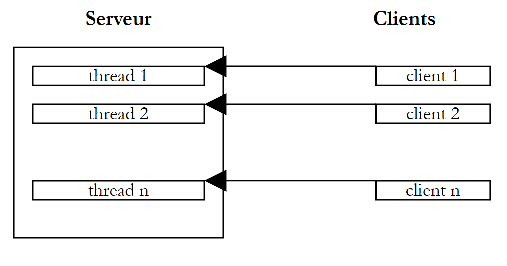
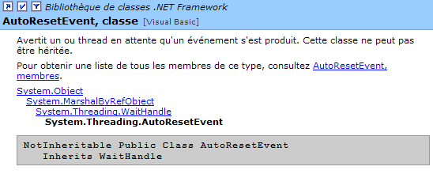

8. Execution threads
8.1. Introduction
When an application is launched, it runs in an execution flow called a thread. The .NET class that models a thread is the System.Threading.Thread class and has the following definition:

We will use only some of the properties and methods of this class:
returns the thread currently running | |
thread name | |
indicates whether the thread is active (true) or not (false) | |
starts the execution of a thread | |
permanently stops a thread's execution | |
pauses a thread for n milliseconds | |
temporarily suspends the execution of a thread | |
resumes the execution of a suspended thread | |
blocking operation - waits for the thread to finish before proceeding to the next instruction |
Let’s look at a simple application that demonstrates the existence of a main execution thread, the one in which a class’s Main function runs:
' Using threads
Imports System
Imports System.Threading
Public Module thread1
Public Sub Main()
' Initialize current thread
Dim main As Thread = Thread.CurrentThread
' display
Console.Out.WriteLine(("Current thread: " + main.Name))
' change the name
main.Name = "main"
' verification
Console.Out.WriteLine(("Current thread: " + main.Name))
'infinite loop
While True
' display
Console.Out.WriteLine((main.Name + " : " + DateTime.Now.ToString("hh:mm:ss")))
' temporary pause
Thread.Sleep(1000)
End While
End Sub
End Module
Screen results:
dos>thread1
Current thread:
Current thread: main
main: 06:13:55
main: 06:13:56
main: 06:13:57
main: 06:13:58
main: 06:13:59
The previous example illustrates the following points:
- the Main function runs in a thread
- we can access the properties of this thread via Thread.CurrentThread
- the role of the Sleep method. Here, the thread executing Main sleeps for 1 second between each display.
8.2. Creating execution threads
It is possible to have applications where pieces of code execute "simultaneously" in different execution threads. When we say that threads run simultaneously, we are often using the term loosely. If the machine has only one processor, as is still often the case, the threads share this processor: they each have access to it, in turn, for a brief moment (a few milliseconds). This is what creates the illusion of parallel execution. The amount of time allocated to a thread depends on various factors, including its priority, which has a default value but can also be set programmatically. When a thread has the processor, it normally uses it for the entire time allotted to it. However, it can release it early:
- by waiting for an event (wait, join, suspend)
- by sleeping for a specified period (sleep)
- A thread T is first created by its constructor
ThreadStart is of type delegate and defines the prototype of a function with no parameters:
A typical construction is as follows:
The run function passed as a parameter will be executed when the thread is launched.
- The execution of thread T is initiated by T.Start(): the [run] function passed to the constructor of T will then be executed by thread T. The program executing the T.Start() statement does not wait for task T to finish: it immediately proceeds to the next statement. We now have two tasks running in parallel. They often need to communicate with each other to know the status of the shared work to be done. This is the problem of thread synchronization.
- Once launched, the thread runs autonomously. It will stop when the start function it is executing has finished its work.
- We can send certain signals to task T:
- T.Suspend() tells it to pause temporarily
- T.Resume() tells it to resume its work
- T.Abort() tells it to stop permanently
- You can also wait for it to finish executing using T.join(). This is a blocking instruction: the program executing it is blocked until task T has finished its work. It is a means of synchronization.
Let’s examine the following program:
' options
Option Strict On
Option Explicit On
' namespaces
Imports System
Imports System.Threading
Module thread2
Public Sub Main()
' Initialize current thread
Dim main As Thread = Thread.CurrentThread
' Set a name for the thread
main.Name = "main"
Creating execution threads
Dim tasks(4) As Thread
Dim i As Integer
For i = 0 To tasks.Length - 1
' Create thread i
tasks(i) = New Thread(New ThreadStart(AddressOf display))
' Set the thread name
tasks(i).Name = "task_" & i
' Start thread i
tasks(i).Start()
Next i
' end of main
Console.Out.WriteLine(("End of thread " + main.Name))
End Sub
Public Sub display()
' Display start of execution
Console.Out.WriteLine(("Start of execution of the display method in thread " + Thread.CurrentThread.Name + ": " + DateTime.Now.ToString("hh:mm:ss")))
' Sleep for 1 second
Thread.Sleep(1000)
' Display end of execution
Console.Out.WriteLine(("End of method execution displayed in thread " + Thread.CurrentThread.Name + ": " + DateTime.Now.ToString("hh:mm:ss")))
End Sub
End Module
The main thread, the one that executes the Main function, creates 5 other threads responsible for executing the static method display. The results are as follows:
dos>thread2
End of main thread
Start of execution of the display method in the task_0 thread: 05:27:53
Start of execution of the affiche method in the tache_1 thread: 05:27:53
Start of execution of the affiche method in the tache_2 thread: 05:27:53
Start of method execution in thread task_3: 05:27:53
Start of method execution displayed in thread task_4: 05:27:53
End of method execution displayed in thread task_0: 05:27:54
End of method execution displayed in thread task_1: 05:27:54
End of method execution displayed in thread task_2: 05:27:54
End of method execution displayed in thread task_3: 05:27:54
End of method execution displayed in the tache_4 thread: 05:27:54
These results are very informative:
- First, we see that starting a thread’s execution is not blocking. The Main method started the execution of 5 threads in parallel and finished executing before them. The
starts the execution of the thread tasks[i], but once this is done, execution immediately continues with the next statement without waiting for the thread to finish.
- All created threads must execute the display method. The order of execution is unpredictable. Even though in the example, the order of execution appears to follow the order of execution requests, no general conclusions can be drawn from this. The operating system here has 6 threads and one processor. It will allocate the processor to these 6 threads according to its own rules.
- The results show an effect of the Sleep method. In the example, thread 0 is the first to execute the display method. The start-of-execution message is displayed, then it executes the Sleep method, which suspends it for 1 second. It then loses the processor, which becomes available to another thread. The example shows that thread 1 will obtain it. Thread 1 will follow the same path, as will the other threads. When the 1-second sleep period for thread 0 ends, its execution can resume. The system grants it the processor, and it can complete the execution of the display method.
Let’s modify our program to end the Main method with the following instructions:
Running the new program yields:
The threads created by the Main function are not executed. It is the statement
that does this: it terminates all threads in the application, not just the Main thread. The solution to this problem is for the Main method to wait for the threads it created to finish executing before terminating itself. This can be done using the Join method of the Thread class:
' wait for all threads to finish executing
For i = 0 To tasks.Length - 1
' wait for thread i to finish executing
tasks(i).Join()
Next i 'for
' end of main
Console.Out.WriteLine(("End of thread " + main.Name))
Environment.Exit(0)
This produces the following results:
Start of method execution displayed in the tache_1 thread: 05:34:48
Start of method execution displayed in the tache_2 thread: 05:34:48
Start of method execution displayed in the tache_3 thread: 05:34:48
Start of method execution displayed in the tache_4 thread: 05:34:48
Start of method execution displayed in thread task_0: 05:34:48
End of method execution displayed in thread task_2: 05:34:50
End of method execution displayed in the tache_1 thread: 05:34:50
End of method execution displayed in thread task_3: 05:34:50
End of method execution displayed in thread task_0: 05:34:50
End of method execution displayed in the tache_4 thread: 05:34:50
End of the main thread
8.3. Benefits of threads
Now that we have highlighted the existence of a default thread—the one that executes the Main method—and we know how to create others, let’s consider the benefits of threads for us and why we are presenting them here. There is a type of application that lends itself well to the use of threads: client-server applications on the Internet. In such an application, a server located on machine S1 responds to requests from clients located on remote machines C1, C2, ..., Cn.
 |
We use Internet applications that follow this pattern every day: web services, email, forum browsing, file transfers... In the diagram above, server S1 must serve clients C1, C2, ..., Cn simultaneously. If we take the example of an FTP (File Transfer Protocol) server that delivers files to its clients, we know that a file transfer can sometimes take several hours. It is, of course, out of the question for a single client to monopolize the server for such a long period. What is usually done is that the server creates as many execution threads as there are clients. Each thread is then responsible for handling a specific client. Since the processor is cyclically shared among all active threads on the machine, the server spends a little time with each client, thereby ensuring the concurrency of the service.
 |
8.4. Access to Shared Resources
In the client-server example mentioned above, each thread serves a client largely independently. Nevertheless, threads may need to cooperate to provide the requested service to their client, particularly when accessing shared resources. The diagram above resembles the counters of a large government office, such as a post office, where an agent at each counter serves a customer. Suppose that from time to time these agents need to make photocopies of documents brought in by their customers and that there is only one photocopier. Two agents cannot use the photocopier at the same time. If agent i finds the photocopier in use by agent j, they will have to wait. This situation is called access to a shared resource, and in computer science, it is quite tricky to manage. Consider the following example:
- an application will generate n threads, where n is passed as a parameter
- the shared resource is a counter that must be incremented by each generated thread
- at the end of the application, the counter’s value is displayed. We should therefore get n.
The program is as follows:
' options
Option Explicit On
Option Strict On
' use of threads
Imports System
Imports System.Threading
Public Class thread3
' class variables
Private Shared cptrThreads As Integer = 0
Public Overloads Shared Sub Main(ByVal args() As [String])
' usage instructions
Const syntax As String = "pg nbThreads"
Const nbMaxThreads As Integer = 100
' Check number of arguments
If args.Length <> 1 Then
' error
Console.Error.WriteLine(syntax)
' exit
Environment.Exit(1)
End If
' Check argument quality
Dim nbThreads As Integer = 0
Try
nbThreads = Integer.Parse(args(0))
If nbThreads < 1 Or nbThreads > nbMaxThreads Then
Throw New Exception
End If
Catch
' error
Console.Error.WriteLine("Invalid number of threads (between 1 and " & nbMaxThreads & ")")
' end
Environment.Exit(2)
End Try
' Create and spawn threads
Dim threads(nbThreads - 1) As Thread
Dim i As Integer
For i = 0 To nbThreads - 1
' creation
threads(i) = New Thread(New ThreadStart(AddressOf increment))
' naming
threads(i).Name = "task_" & i
' launch
threads(i).Start()
Next i
' wait for threads to finish
For i = 0 To nbThreads - 1
threads(i).Join()
Next i ' display counter
Console.Out.WriteLine(("Number of threads generated: " & cptrThreads))
End Sub
Public Shared Sub increment()
' Increases the thread counter
' read counter
Dim value As Integer = cptrThreads
' followed by
Console.Out.WriteLine(("At " + DateTime.Now.ToString("hh:mm:ss") & ", thread " & Thread.CurrentThread.Name & " read the counter value: " & cptrThreads))
' wait
Thread.Sleep(1000)
' increment counter
cptrThreads = value + 1
' monitoring
Console.Out.WriteLine(("At " & DateTime.Now.ToString("hh:mm:ss") & ", thread " & Thread.CurrentThread.Name & " wrote the counter value: " & cptrThreads))
End Sub
End Class
We won’t dwell on the thread creation part, which we’ve already covered. Instead, let’s focus on the Increment method, used by each thread to increment the static counter cptrThreads.
- The counter is read
- the thread pauses for 1 second. It therefore loses the CPU
- the counter is incremented
Step 2 is only there to force the thread to lose the processor. The processor will be given to another thread. In practice, there is no guarantee that a thread will not be interrupted between the moment it reads the counter and the moment it increments it. There is a risk of losing the CPU between the moment the counter value is read and the moment its value, incremented by 1, is written. Indeed, the increment operation will involve several basic instructions at the processor level that can be interrupted. Step 2, the one-second sleep, is therefore only there to account for this risk. The results obtained are as follows:
dos>thread3 5
At 05:44:34, the tache_0 thread read the counter value: 0
At 05:44:34, the tache_1 thread read the counter value: 0
At 05:44:34, the tache_2 thread read the counter value: 0
At 05:44:34, the tache_3 thread read the counter value: 0
At 05:44:34, the tache_4 thread read the counter value: 0
At 05:44:35, the tache_0 thread wrote the counter value: 1
At 05:44:35, the tache_1 thread wrote the counter value: 1
At 05:44:35, the tache_2 thread wrote the counter value: 1
At 05:44:35, the tache_3 thread wrote the counter value: 1
At 05:44:35, the tache_4 thread wrote the counter value: 1
Number of threads generated: 1
Looking at these results, it’s clear what’s happening:
- A first thread reads the counter. It finds 0.
- It pauses for 1 second, thus yielding the CPU
- A second thread then takes the CPU and also reads the counter value. It is still 0 since the previous thread has not yet incremented it. It also pauses for 1 second.
- In 1 second, all 5 threads have time to run and read the value 0.
- When they wake up one after another, they will increment the value 0 they read and write the value 1 to the counter, which is confirmed by the main program (Main).
Where does the problem come from? The second thread read an incorrect value because the first thread was interrupted before it finished its task, which was to update the counter in the window. This brings us to the concept of critical resources and critical sections in a program:
- A critical resource is a resource that can be held by only one thread at a time. Here, the critical resource is the counter.
- A critical section of a program is a sequence of instructions in a thread’s execution flow during which it accesses a critical resource. We must ensure that during this critical section, it is the only one with access to the resource.
8.5. Exclusive access to a shared resource
In our example, the critical section is the code located between reading the counter and writing its new value:
' read counter
Dim value As Integer = cptrThreads
' wait
Thread.Sleep(1000)
' increment counter
cptrThreads = value + 1
To execute this code, a thread must be guaranteed to be alone. It may be interrupted, but during that interruption, no other thread must be able to execute this same code. The .NET platform offers several tools to ensure single-threaded entry into critical sections of code. We will use the Mutex class:

Here, we will use only the following constructors and methods:
creates a synchronization object M | |
Thread T1, which executes the M.WaitOne() operation, requests ownership of the synchronization object M. If the Mutex M is not held by any thread (the initial case), it is "given" to thread T1, which requested it. If, a little later, thread T2 performs the same operation, it will be blocked. In fact, a mutex can belong to only one thread. It will be released when thread T1 releases the mutex M it holds. Several threads can thus be blocked while waiting for the mutex M. | |
The thread T1 that performs the operation M.ReleaseMutex() relinquishes ownership of the mutex M. When thread T1 loses the processor, the system can assign it to one of the threads waiting for the mutex M. Only one will obtain it in turn; the others waiting for M remain blocked |
A Mutex M manages access to a shared resource R. A thread requests resource R via M.WaitOne() and releases it via M.ReleaseMutex(). A critical section of code that must be executed by only one thread at a time is a shared resource. Synchronization of the critical section’s execution can be achieved as follows:
where M is a Mutex object. Of course, you must never forget to release a Mutex that is no longer needed so that another thread can enter the critical section; otherwise, threads waiting for a Mutex that is never released will never gain access to the processor. Furthermore, one must avoid a deadlock situation in which two threads wait for each other. Consider the following actions occurring in sequence:
- a thread T1 acquires ownership of a Mutex M1 to access a shared resource R1
- a thread T2 acquires a Mutex M2 to access a shared resource R2
- Thread T1 requests Mutex M2. It is blocked.
- Thread T2 requests Mutex M1. It is blocked.
Here, threads T1 and T2 are waiting for each other. This situation occurs when threads require two shared resources: resource R1 controlled by Mutex M1 and resource R2 controlled by Mutex M2. One possible solution is to acquire both resources simultaneously using a single Mutex M. However, this is not always feasible if, for example, it results in a prolonged lock on a costly resource. Another solution is for a thread holding M1 that cannot obtain M2 to release M1 to avoid deadlock. If we apply what we just saw to the previous example, our application becomes as follows:
' options
Option Explicit On
Option Strict On
' use of threads
Imports System
Imports System.Threading
Public Class thread4
' class variables
Private Shared cptrThreads As Integer = 0 ' thread counter
Private Shared permission As Mutex
Public Overloads Shared Sub Main(ByVal args() As [String])
' usage instructions
Const syntax As String = "pg nbThreads"
Const nbMaxThreads As Integer = 100
' Check number of arguments
If args.Length <> 1 Then
' error
Console.Error.WriteLine(syntax)
' exit
Environment.Exit(1)
End If
' Check argument quality
Dim nbThreads As Integer = 0
Try
nbThreads = Integer.Parse(args(0))
If nbThreads < 1 Or nbThreads > nbMaxThreads Then
Throw New Exception
End If
Catch
End Try
' Initialize access permission to a critical section
authorization = New Mutex
' creation and generation of threads
Dim threads(nbThreads) As Thread
Dim i As Integer
For i = 0 To nbThreads - 1
' creation
threads(i) = New Thread(New ThreadStart(AddressOf increment))
' naming
threads(i).Name = "task_" & i
' launch
threads(i).Start()
Next i
' wait for threads to finish
For i = 0 To nbThreads - 1
threads(i).Join()
Next i
' display counter
Console.Out.WriteLine(("Number of threads generated: " & cptrThreads))
End Sub
Public Shared Sub increment()
' Increases the thread counter
' request permission to enter the critical section
authorization.WaitOne()
' read counter
Dim value As Integer = cptrThreads
' monitoring
Console.Out.WriteLine(("At " & DateTime.Now.ToString("hh:mm:ss") & ", thread " & Thread.CurrentThread.Name & " read the counter value: " & cptrThreads))
' wait
Thread.Sleep(1000)
' increment counter
cptrThreads = value + 1
' monitoring
Console.Out.WriteLine(("At " & DateTime.Now.ToString("hh:mm:ss") & ", thread " & Thread.CurrentThread.Name & " wrote the counter value: " & cptrThreads))
' release the access permission
authorization.ReleaseMutex()
End Sub
End Class
The results obtained are as expected:
dos>thread4 5
At 05:51:10, the thread tache_0 read the counter value: 0
At 05:51:11, the tache_0 thread wrote the counter value: 1
At 05:51:11, the tache_1 thread read the counter value: 1
At 05:51:12, the tache_1 thread wrote the counter value: 2
At 05:51:12, the tache_2 thread read the counter value: 2
At 05:51:13, the tache_2 thread wrote the counter value: 3
At 05:51:13, the tache_3 thread read the counter value: 3
At 05:51:14, the thread task_3 wrote the counter value: 4
At 05:51:14, the tache_4 thread read the counter value: 4
At 05:51:15, the tache_4 thread wrote the counter value: 5
Number of threads generated: 5
8.6. Event-based synchronization
Consider the following situation, sometimes referred to as a producer-consumer scenario.
- We have an array into which some processes deposit data (the producers) and others read it (the consumers).
- The producers are equal to one another but exclusive: only one producer at a time can deposit data into the array.
- The consumers are equal to one another but mutually exclusive: only one reader at a time can read the data stored in the array.
- A consumer can only read data from the table once a producer has written it there, and a producer can only write new data to the table once the existing data has been consumed.
In this explanation, we can distinguish two shared resources:
- the writable table
- the read-only array
Access to these two shared resources can be controlled by mutexes, as seen previously, one for each resource. Once a consumer has obtained the read-only array, it must verify that there is indeed data in it. An event will be used to notify it of this. Similarly, a producer that has obtained the write-only array must wait until a consumer has emptied it. An event will be used here as well.
The events used will be of the AutoResetEvent class:

This type of event is analogous to a boolean but avoids active or semi-active waits. Thus, if write access is controlled by a boolean *canWrite*, a producer will execute code like the following before writing:
or
In the first method, the thread unnecessarily ties up the processor. In the second, it checks the state of the canWrite boolean every 100 ms. The AutoResetEvent class allows for further improvement: the thread will request to be woken up when the event it is waiting for occurs:
AutoEvent canWrite = new AutoResetEvent(false) ' canWrite = false;
....
canWrite.WaitOne() ' the thread waits for the canWrite event to become true
The operation
initializes the canWrite boolean to false. The operation
executed by a thread causes that thread to proceed if the boolean canWrite* is true; otherwise, it is blocked until it becomes true. Another thread will set it to true using the canWrite.Set() operation or to false using the canWrite.Reset()* operation.
The producer-consumer program is as follows:
' Use of reader and writer threads
' illustrates the simultaneous use of shared resources and synchronization
' options
Option Explicit On
Option Strict On
' use of threads
Imports System
Imports System.Threading
Public Class lececr
' class variables
Private Shared data(5) As Integer ' resource shared between reader threads and writer threads
Private Shared reader As Mutex ' synchronization variable for reading the array
Private Shared writer As Mutex ' synchronization variable for writing to the array
Private Shared objRandom As New Random(DateTime.Now.Second) ' a random number generator
Private Shared canRead As AutoResetEvent ' indicates that the contents of data can be read
Private Shared canWrite As AutoResetEvent
Public Shared Sub Main(ByVal args() As [String])
' the number of threads to generate
Const nbThreads As Integer = 3
' initialization of flags
canRead = New AutoResetEvent(False) ' cannot read yet
canWrite = New AutoResetEvent(True) ' can already write
' initialize synchronization variables
reader = New Mutex ' synchronizes readers
writer = New Mutex ' synchronizes the writers
' Create reader threads
Dim readers(nbThreads) As Thread
Dim i As Integer
For i = 0 To nbThreads - 1
' creation
readers(i) = New Thread(New ThreadStart(AddressOf read))
readers(i).Name = "reader_" & i
' launch
readers(i).Start()
Next i
' create writer threads
Dim writers(nbThreads) As Thread
For i = 0 To nbThreads - 1
' creation
writers(i) = New Thread(New ThreadStart(AddressOf write))
writers(i).Name = "writer_" & i
' launch
writers(i).Start()
Next i
'End of Main
Console.Out.WriteLine("End of Main...")
End Sub
' read the contents of the array
Public Shared Sub Read()
' critical section
reader.WaitOne() ' only one reader can proceed
canRead.WaitOne() ' must be able to read
' read array
Dim i As Integer
For i = 0 To data.Length - 1
'wait 1 s
Thread.Sleep(1000)
' display
Console.Out.WriteLine((DateTime.Now.ToString("hh:mm:ss") & " : Thread " & Thread.CurrentThread.Name & " read the number " & data(i)))
Next i
' can no longer be read
canRead.reset()
' can write
canWrite.Set()
' end of critical section
reader.ReleaseMutex()
End Sub
' write to the array
Public Shared Sub write()
' critical section
' only one writer can enter
writer.WaitOne()
' must wait for write permission
canWrite.WaitOne()
' write to array
Dim i As Integer
For i = 0 To data.Length - 1
'wait 1 s
Thread.Sleep(1000)
' display
data(i) = objRandom.Next(0, 1000)
Console.Out.WriteLine((DateTime.Now.ToString("hh:mm:ss") & " : The writer " & Thread.CurrentThread.Name & " wrote the number " & data(i)))
Next i
' cannot write anymore
canWrite.Reset()
' can read
canRead.Set()
'end of critical section
writer.ReleaseMutex()
End Sub
End Class
The execution yields the following results:
dos>lececr
End of Main...
05:56:56: Writer writer_0 wrote the number 459
05:56:57: Writer writer_0 wrote the number 955
05:56:58: Writer writer_0 wrote the number 212
05:56:59: Writer writer_0 wrote the number 297
05:57:00: The writer écrivain_0 wrote the number 37
05:57:01: Writer writer_0 wrote the number 623
05:57:02: Reader reader_0 read the number 459
05:57:03: Reader reader_0 read the number 955
05:57:04: Reader reader_0 read the number 212
05:57:05: Reader reader_0 read the number 297
05:57:06: Reader reader_0 read the number 37
05:57:07: Reader reader_0 read the number 623
05:57:08: Writer writer_1 wrote the number 549
05:57:09: Writer writer_1 wrote the number 34
05:57:10: Writer writer_1 wrote the number 781
05:57:11: Writer writer_1 wrote the number 555
05:57:12: The writer writer_1 wrote the number 812
05:57:13: The writer writer_1 wrote the number 406
05:57:14: Reader reader_1 read the number 549
05:57:15: Reader reader_1 read the number 34
05:57:16: Reader reader_1 read the number 781
05:57:17: Reader reader_1 read the number 555
05:57:18: Reader reader_1 read the number 812
05:57:19: Reader reader_1 read the number 406
05:57:20: Writer writer_2 wrote the number 442
05:57:21: Writer writer_2 wrote the number 83
^C
The following points can be noted:
- there is indeed only one reader at a time, even though it loses the CPU in the read critical section
- there is indeed only one writer at a time, even though it loses the CPU in the critical write section
- A reader only reads when there is something to read in the table
- A writer writes only when the array has been fully read